プログラミング教室 提案いろいろ
機材面や費用面などいろいろ課題はありますが、なるべく安価に、ITを学んで頂けたらと考えてみました。
いくつか組み合わせてやってみるのも良いかとは思います。
- 組み立てキットを購入 電子工作して楽しむ
- 価格
- 1000円〜5000円
- 所要時間
- 2時間から4時間くらい
- ポイント
- 電子工作を楽しみ、形ある思い出が残ります。
実用性もあるので良いかも。 - ITパスポートを取得しよう
IT社会に羽ばたく社会人や学生のために、IT(情報技術)の基礎知識を証明できる国家試験。合格の目安として、概ね３０〜５０時間の学習時間。
全て学ばないにしても、2進数や16進数、コンピュータの仕組み(CPUやメモリ)など、基礎を押さえておくのは有益かと思います。
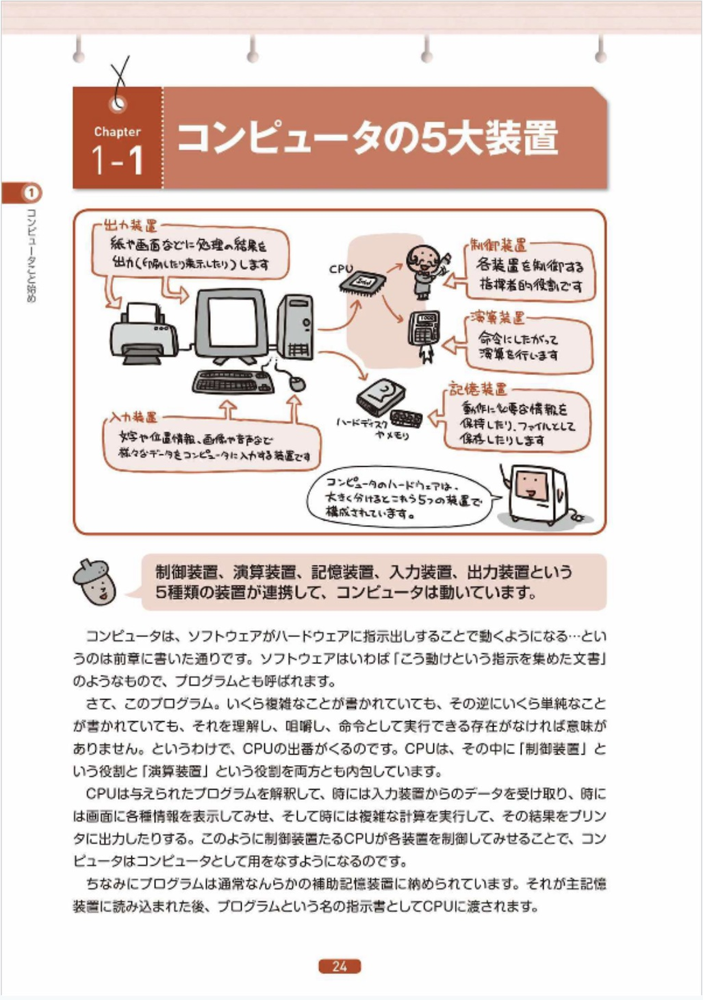
- iPhone で プログラミング言語 「Ruby(ルビー)」を学ぼう。
iPhone を使って、楽しく本質的な処理を書くことができる、オブジェクト指向言語「Ruby」を学びます。アプリの価格は400円と安価。テキスト代は2200円です。外付けキーボード2000円があると、タイピングしやすくよいでしょうか。
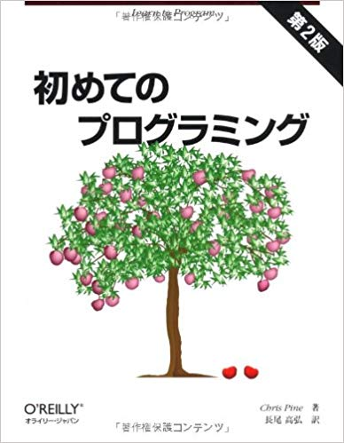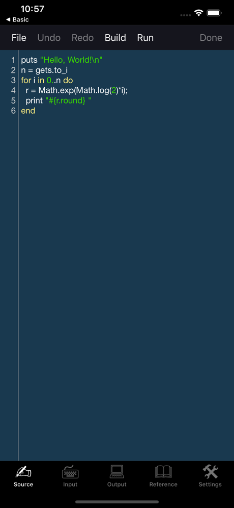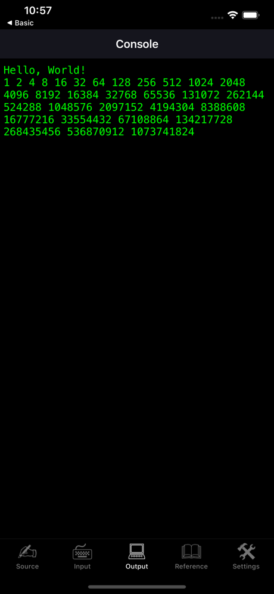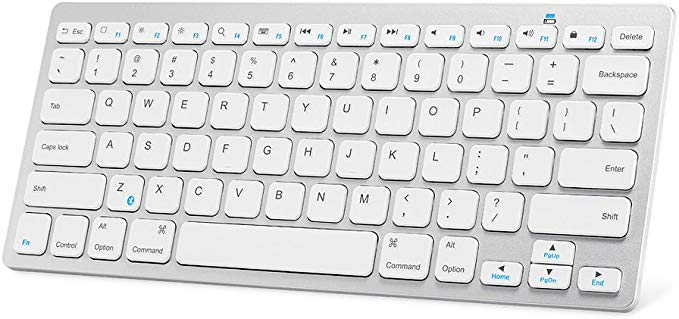
画面に文字を出したり、簡単な計算をしたりが主になります。
最後にポーカーのプログラムをやってみたりすると、楽しいでしょうか？
学習内容にもよりますが、2〜10時間くらいの授業時間でしょうか。 - 超小型パソコン Raspberry Pi(ラズベリーパイ) で、マイパソコンを作ろう。
ラズベリーパイ本体は、6000円に、ケースやケーブル、ディスプレイ、キーボード、マウスをあわせると、マイパソコンの出来上がり。
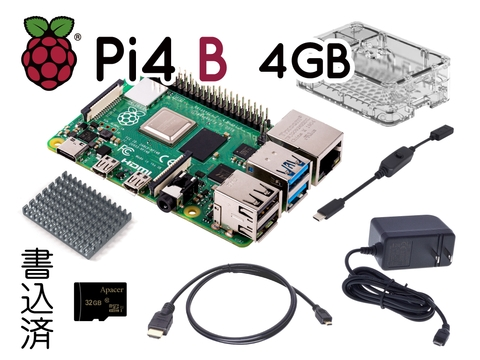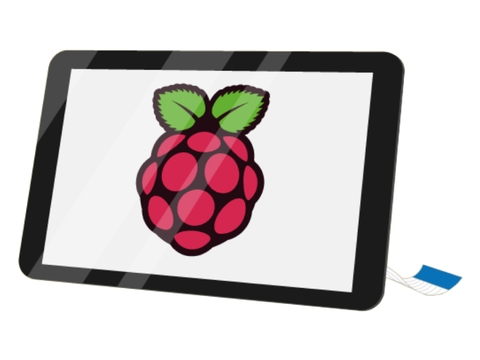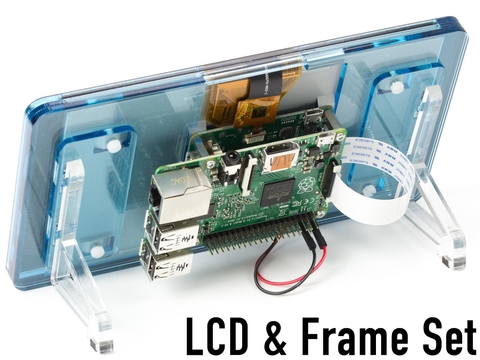Pi4 B 4GB スターター キット V2 32GB
ラズベリーパイのキット代 11440円, ディスプレイ代 5000円〜15000円、キーボード2000円、マウス1000円、合計 20000円 ~ 25000円くらいです。
でき上がった後は、プログラミングやホームページ作り、表計算などに活用できます。
キットの組立だけでしたら2時間くらいで可能かと思います。
ウルトラスリム ワイヤレスキーボード - Webサイトを作成しよう
クラウド(インターネット)で開発できるCloud 9を使って、Webサイト(ホームページ)を作成していきます。
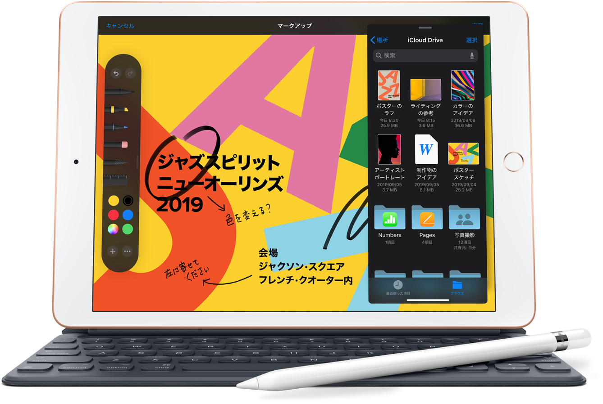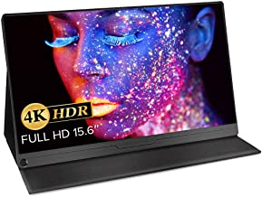
ブラウザが使えたらよいだけですので、パソコンがなくても、iPhoneでも開発可能です。
そして、文字入力のためにキーボード2000円や、大きな画面で見るために、iPad 34800円〜 またはモバイルディスプレイ5000円〜40000円くらいがあるとよいと思います。 - ロボホン ＆ スクラッチ
パソコンはもちろん、iPadや、iPhoneでも画面は狭いですが、プログラミングは可能です。
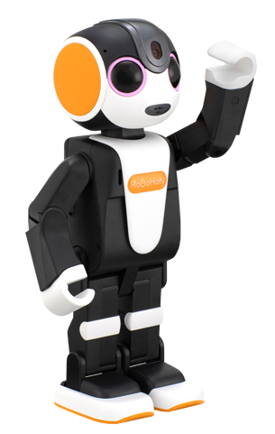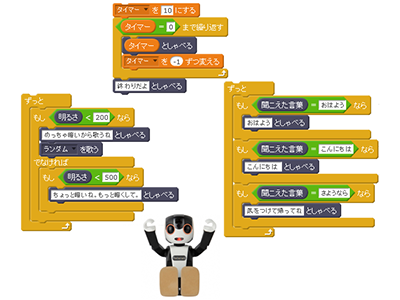
基本的には小学生向けなので、1〜2時間くらい遊んで、
ロボットをプログラムで制御するという体験ができます。